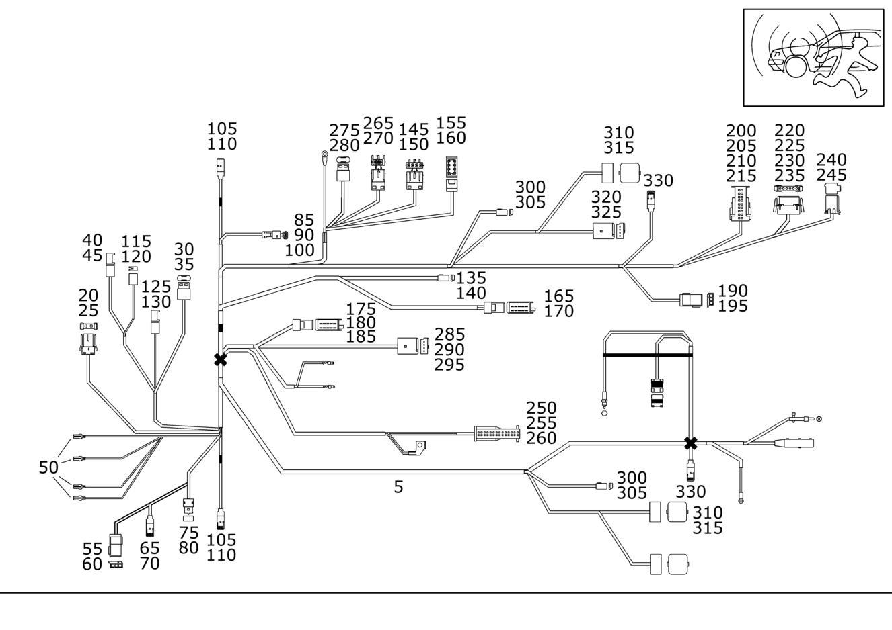

| № | Артикул | Название | Кол. | Примечание | Ограничение |
|---|---|---|---|---|---|
| 5 | A 170 540 99 06 | Жгут электропроводки (LEITUNGSSATZ) | 1 | ПОДУШ. БЕЗОПАСН., НАТЯЖИТ. РЕМНЯ, ТЕЛЕФОН, CD, ПРОТИВОУГОН. СИСТЕМА Рулевое управление: Влево | 494+349 |
| 5 | A 170 540 99 07 | ЖГУТ ЭЛ.-ПРОВОДКИ | 1 | ПОДУШ. БЕЗОПАСН., НАТЯЖИТ. РЕМНЯ, ТЕЛЕФОН, CD, ПРОТИВОУГОН. СИСТЕМА Рулевое управление: Влево | 494+349 |
| 5 | A 170 540 00 09 | Жгут электропроводки (LEITUNGSSATZ) | 1 | ПОДУШ. БЕЗОПАСН., НАТЯЖИТ. РЕМНЯ, ТЕЛЕФОН, CD, ПРОТИВОУГОН. СИСТЕМА Рулевое управление: Влево | 494+349 |
| 5 | A 170 540 64 07 | ЖГУТ ЭЛ.-ПРОВОДКИ | 1 | НАТЯЖ.РЕМ.БЕЗ.,ПОДУШ.БЕЗ.И БОК.ПОД.БЕЗ. Рулевое управление: Влево | 494 |
| 5 | A 170 540 99 08 | Электрический жгут | 1 | НАТЯЖ.РЕМ.БЕЗ.,ПОДУШ.БЕЗ.И БОК.ПОД.БЕЗ. Рулевое управление: Влево [402] БОЛЬШЕ НЕ ПОСТАВЛЯЕТСЯ | 494 |
| 20 | A 032 545 05 28 | - Корпус штекера (STECKERGEHAEUSE) | 1 | РАЗЪЕМ EDW СПЕРЕДИ / EDW СЗАДИ; 3 PIN | |
| 25 | A 009 545 28 26 | - Контактная втулка (KONTAKTBUCHSE) | NB | 0.5\-1.0 MM2 RK2.5 | |
| 30 | A 018 545 15 28 | - Корпус штекерной втулки (STECKHUELSENGEHAEUSE) | 1 | ВЫКЛ. "НАЖАТЬ ДЛЯ РАЗГОВОРА"; 4\-PIN | |
| 35 | A 003 545 06 26 | - Контактная втулка (KONTAKTBUCHSE) | NB | 0.35\-2.5 MM2 RK2.5 | |
| 40 | A 012 545 86 28 | - Корпус штекерной втулки (STECKHUELSENGEHAEUSE) | 1 | ПРОМЕЖУТ. РАЗЪЕМ, ДИАГНОСТИКА; 2\-PIN RK2.5 | 349 |
| 45 | A 003 545 06 26 | - Контактная втулка (KONTAKTBUCHSE) | NB | 0.35\-2.5 MM2 RK2.5 | |
| 50 | A 000 540 50 05 | - Электрический провод (ELEKTRISCHE LEITUNG) | NB | 1.0 MM2 GSK1 [T774] СОЕДИНИТЕЛИ СЛЕДУЕТ ЗАКАЗЫВАТЬ В СООТВЕТСТВИИ С ОБЩИМ ПОПЕРЕЧНЫМ СЕЧЕНИЕМ СОЕДИНЯЕМЫХ ПРОВОДОВРУКОВОДСТВО ПО РЕМОНТУ СМ. WIS. ================================================================================================= SOLDER CONNECTOR SLEEVES: TOTAL WIRE CROSS-SECTION: A 001 546 99 41 GREEN 0.7 - 2.4 MM2 A 002 546 00 41 RED 2.0 - 4.0 MM2 A 002 546 01 41 BLUE 3.5 - 8.0 MM2 A 002 546 11 41 YELLOW 7.5 - 12.0 MM2 BUTT JOINT: A 002 546 13 41 0.5 MM2 A 002 546 14 41 0.8 MM2 A 002 546 15 41 1.3 MM2 A 002 546 16 41 2.0 MM2 =================================================================================================== | |
| 55 | A 029 545 55 28 | - Корпус штекерной втулки (STECKHUELSENGEHAEUSE) | 1 | БУ УСТР\-ВА УПРАВЛ. ВОРОТАМИ ГАРАЖА; 3\-PIN MQS | |
| 60 | A 000 540 45 05 | - Электрический провод (ELEKTRISCHE LEITUNG) | NB | 0.5 MM2 MQS SN [T774] СОЕДИНИТЕЛИ СЛЕДУЕТ ЗАКАЗЫВАТЬ В СООТВЕТСТВИИ С ОБЩИМ ПОПЕРЕЧНЫМ СЕЧЕНИЕМ СОЕДИНЯЕМЫХ ПРОВОДОВРУКОВОДСТВО ПО РЕМОНТУ СМ. WIS. ================================================================================================= SOLDER CONNECTOR SLEEVES: TOTAL WIRE CROSS-SECTION: A 001 546 99 41 GREEN 0.7 - 2.4 MM2 A 002 546 00 41 RED 2.0 - 4.0 MM2 A 002 546 01 41 BLUE 3.5 - 8.0 MM2 A 002 546 11 41 YELLOW 7.5 - 12.0 MM2 BUTT JOINT: A 002 546 13 41 0.5 MM2 A 002 546 14 41 0.8 MM2 A 002 546 15 41 1.3 MM2 A 002 546 16 41 2.0 MM2 =================================================================================================== | |
| 65 | A 030 545 28 28 | - Штекер (STECKER) | 1 | Микрофон системы громкой связи; 2\-PIN MQS | 349 |
| 65 | A 032 545 19 28 | - Корпус штекерной втулки (STECKHUELSENGEHAEUSE) | 1 | Микрофон системы громкой связи; 2\-PIN MQS | 349 |
| 65 | A 033 545 67 28 | - Штекер (STECKER) | 1 | Микрофон системы громкой связи; 2\-PIN MQS | |
| 70 | A 000 540 45 05 | - Электрический провод (ELEKTRISCHE LEITUNG) | NB | 0.5 MM2 MQS SN [T774] СОЕДИНИТЕЛИ СЛЕДУЕТ ЗАКАЗЫВАТЬ В СООТВЕТСТВИИ С ОБЩИМ ПОПЕРЕЧНЫМ СЕЧЕНИЕМ СОЕДИНЯЕМЫХ ПРОВОДОВРУКОВОДСТВО ПО РЕМОНТУ СМ. WIS. ================================================================================================= SOLDER CONNECTOR SLEEVES: TOTAL WIRE CROSS-SECTION: A 001 546 99 41 GREEN 0.7 - 2.4 MM2 A 002 546 00 41 RED 2.0 - 4.0 MM2 A 002 546 01 41 BLUE 3.5 - 8.0 MM2 A 002 546 11 41 YELLOW 7.5 - 12.0 MM2 BUTT JOINT: A 002 546 13 41 0.5 MM2 A 002 546 14 41 0.8 MM2 A 002 546 15 41 1.3 MM2 A 002 546 16 41 2.0 MM2 =================================================================================================== | |
| 75 | A 033 545 00 28 | - Корпус штекерной втулки (STECKHUELSENGEHAEUSE) | 1 | ВЫКЛ. ЭКСТР. ВЫЗОВА; 4\-PIN MQS | 349 |
| 80 | A 000 540 45 05 | - Электрический провод (ELEKTRISCHE LEITUNG) | NB | 0.5 MM2 MQS SN [T774] СОЕДИНИТЕЛИ СЛЕДУЕТ ЗАКАЗЫВАТЬ В СООТВЕТСТВИИ С ОБЩИМ ПОПЕРЕЧНЫМ СЕЧЕНИЕМ СОЕДИНЯЕМЫХ ПРОВОДОВРУКОВОДСТВО ПО РЕМОНТУ СМ. WIS. ================================================================================================= SOLDER CONNECTOR SLEEVES: TOTAL WIRE CROSS-SECTION: A 001 546 99 41 GREEN 0.7 - 2.4 MM2 A 002 546 00 41 RED 2.0 - 4.0 MM2 A 002 546 01 41 BLUE 3.5 - 8.0 MM2 A 002 546 11 41 YELLOW 7.5 - 12.0 MM2 BUTT JOINT: A 002 546 13 41 0.5 MM2 A 002 546 14 41 0.8 MM2 A 002 546 15 41 1.3 MM2 A 002 546 16 41 2.0 MM2 =================================================================================================== | |
| 85 | A 033 545 67 28 | - Штекер (STECKER) | 1 | ДИНАМИК ПЕРЕДНИЙ ПРАВЫЙ; 2\-PIN MQS | 349 |
| 90 | A 000 540 45 05 | - Электрический провод (ELEKTRISCHE LEITUNG) | NB | 0.5 MM2 MQS SN [T774] СОЕДИНИТЕЛИ СЛЕДУЕТ ЗАКАЗЫВАТЬ В СООТВЕТСТВИИ С ОБЩИМ ПОПЕРЕЧНЫМ СЕЧЕНИЕМ СОЕДИНЯЕМЫХ ПРОВОДОВРУКОВОДСТВО ПО РЕМОНТУ СМ. WIS. ================================================================================================= SOLDER CONNECTOR SLEEVES: TOTAL WIRE CROSS-SECTION: A 001 546 99 41 GREEN 0.7 - 2.4 MM2 A 002 546 00 41 RED 2.0 - 4.0 MM2 A 002 546 01 41 BLUE 3.5 - 8.0 MM2 A 002 546 11 41 YELLOW 7.5 - 12.0 MM2 BUTT JOINT: A 002 546 13 41 0.5 MM2 A 002 546 14 41 0.8 MM2 A 002 546 15 41 1.3 MM2 A 002 546 16 41 2.0 MM2 =================================================================================================== | 349 |
| 100 | A 126 821 04 97 | - Защитный шланг (SCHUTZSCHLAUCH) | NB | 349 | |
| 105 | A 001 540 69 81 | - РОЗЕТКА | 1 | ПИРОПАТРОН БОК. ПОДУШ. БЕЗОП. СЛЕВА | |
| 105 | A 000 540 13 05 | - РЕМКОМПЛЕКТ | 1 | ПИРОПАТРОН БОК. ПОДУШ. БЕЗОП. СЛЕВА; 2\-PIN | |
| 105 | A 001 540 69 81 | - РОЗЕТКА | 1 | ПИРОПАТРОН БОК. ПОДУШ. БЕЗОП. СПРАВА | |
| 105 | A 000 540 13 05 | - РЕМКОМПЛЕКТ | 1 | ПИРОПАТРОН БОК. ПОДУШ. БЕЗОП. СПРАВА; 2\-PIN | |
| 110 | A 007 545 55 26 | - РОЗЕТКА | NB | ||
| 115 | A 026 545 82 28 | - Сцепление, механическое (KUPPLUNG, MECHANISCH) | 1 | КОНТ. СПИРАЛЬ ЗВ. СИГНАЛА/ПОДУШ. БЕЗОП.; 2\-PIN | -349 |
| 120 | A 003 545 06 26 | - Контактная втулка (KONTAKTBUCHSE) | NB | 0.35\-2.5 MM2 RK2.5 | -349 |
| 125 | A 210 545 32 28 | - Корпус штекерной втулки (STECKHUELSENGEHAEUSE) | 1 | КОМБИНАЦИЯ ПРИБОРОВ; 2\-PIN MQS | -349 |
| 130 | A 000 540 45 05 | - Электрический провод (ELEKTRISCHE LEITUNG) | NB | 0.5 MM2 MQS SN [T774] СОЕДИНИТЕЛИ СЛЕДУЕТ ЗАКАЗЫВАТЬ В СООТВЕТСТВИИ С ОБЩИМ ПОПЕРЕЧНЫМ СЕЧЕНИЕМ СОЕДИНЯЕМЫХ ПРОВОДОВРУКОВОДСТВО ПО РЕМОНТУ СМ. WIS. ================================================================================================= SOLDER CONNECTOR SLEEVES: TOTAL WIRE CROSS-SECTION: A 001 546 99 41 GREEN 0.7 - 2.4 MM2 A 002 546 00 41 RED 2.0 - 4.0 MM2 A 002 546 01 41 BLUE 3.5 - 8.0 MM2 A 002 546 11 41 YELLOW 7.5 - 12.0 MM2 BUTT JOINT: A 002 546 13 41 0.5 MM2 A 002 546 14 41 0.8 MM2 A 002 546 15 41 1.3 MM2 A 002 546 16 41 2.0 MM2 =================================================================================================== | -349 |
| 135 | A 027 545 65 28 | - Корпус штекерной втулки (STECKHUELSENGEHAEUSE) | 1 | ВЫКЛ. ИНДИКАТОРА СОСТОЯНИЯ ПРОТИВОУГОН. СИСТЕМЫ; 3\-PIN | |
| 140 | A 000 540 70 05 | - Жгут электропроводки | NB | 0.75 MM2 E95 SN [T774] СОЕДИНИТЕЛИ СЛЕДУЕТ ЗАКАЗЫВАТЬ В СООТВЕТСТВИИ С ОБЩИМ ПОПЕРЕЧНЫМ СЕЧЕНИЕМ СОЕДИНЯЕМЫХ ПРОВОДОВРУКОВОДСТВО ПО РЕМОНТУ СМ. WIS. ================================================================================================= SOLDER CONNECTOR SLEEVES: TOTAL WIRE CROSS-SECTION: A 001 546 99 41 GREEN 0.7 - 2.4 MM2 A 002 546 00 41 RED 2.0 - 4.0 MM2 A 002 546 01 41 BLUE 3.5 - 8.0 MM2 A 002 546 11 41 YELLOW 7.5 - 12.0 MM2 BUTT JOINT: A 002 546 13 41 0.5 MM2 A 002 546 14 41 0.8 MM2 A 002 546 15 41 1.3 MM2 A 002 546 16 41 2.0 MM2 =================================================================================================== [001409] ДО ИДЕНТ. № F298214, КОД ДЕТАЛИ ЗАКАЗЫВАТЬ БЕЗ РАСШИРЕНИЯ ES1 [001410] НАЧИНАЯ С ИДЕНТ. НОМЕРА F298215, ЗАКАЗЫВАТЬ № ДЕТАЛИ С ES1 98 | |
| 145 | A 031 545 73 28 | - Штекер (STECKER) | 1 | ПРОМЕЖУТ. РАЗЪЕМ ЖГУТА ПРОВОДКИ ЗАДН. ФОНАРЕЙ; 4\-PIN | |
| 150 | A 009 545 28 26 | - Контактная втулка (KONTAKTBUCHSE) | NB | 0.5\-1.0 MM2 RK2.5 | |
| 150 | A 009 545 29 26 | - Контактная втулка (KONTAKTBUCHSE) | NB | 1.1\-2.5 MM2 RK2.5 | |
| 155 | A 035 545 34 28 | - Корпус штекера (STECKERGEHAEUSE) | 1 | ПРОМЕЖУТ. РАЗЪЕМ ЖГУТА ПРОВОДКИ ЗАДН. ФОНАРЕЙ; 8\-PIN | 349 |
| 160 | A 009 545 28 26 | - Контактная втулка (KONTAKTBUCHSE) | NB | 0.5\-1.0 MM2 RK2.5 | 349 |
| 165 | A 202 545 37 28 | - Корпус штекерной втулки (STECKHUELSENGEHAEUSE) | 1 | АУДИОМОДУЛЬ; 10\-PIN JPT | |
| 170 | A 011 545 81 26 | - Контактная пружина (FEDERSTECKER) | NB | 0.5\-1.0 MM2 JPT | |
| 175 | A 001 545 51 40 | - Сцепление, механическое (KUPPLUNG, MECHANISCH) | 1 | ДЛЯ А/М БЕЗ СИСТЕМЫ ИНЕРТИЗАЦИИ; 6\-PIN | 349 |
| 180 | A 000 545 94 03 | - Крышка | NB | TO A 001 545 51 40 | 349 |
| 185 | A 000 540 45 05 | - Электрический провод (ELEKTRISCHE LEITUNG) | NB | 0.5 MM2 MQS SN [T774] СОЕДИНИТЕЛИ СЛЕДУЕТ ЗАКАЗЫВАТЬ В СООТВЕТСТВИИ С ОБЩИМ ПОПЕРЕЧНЫМ СЕЧЕНИЕМ СОЕДИНЯЕМЫХ ПРОВОДОВРУКОВОДСТВО ПО РЕМОНТУ СМ. WIS. ================================================================================================= SOLDER CONNECTOR SLEEVES: TOTAL WIRE CROSS-SECTION: A 001 546 99 41 GREEN 0.7 - 2.4 MM2 A 002 546 00 41 RED 2.0 - 4.0 MM2 A 002 546 01 41 BLUE 3.5 - 8.0 MM2 A 002 546 11 41 YELLOW 7.5 - 12.0 MM2 BUTT JOINT: A 002 546 13 41 0.5 MM2 A 002 546 14 41 0.8 MM2 A 002 546 15 41 1.3 MM2 A 002 546 16 41 2.0 MM2 =================================================================================================== | 349 |
| 190 | A 029 545 55 28 | - Корпус штекерной втулки (STECKHUELSENGEHAEUSE) | 1 | CD\-ЧЕЙНДЖЕР; 3\-PIN MQS | |
| 195 | A 000 540 45 05 | - Электрический провод (ELEKTRISCHE LEITUNG) | NB | 0.5 MM2 MQS SN [T774] СОЕДИНИТЕЛИ СЛЕДУЕТ ЗАКАЗЫВАТЬ В СООТВЕТСТВИИ С ОБЩИМ ПОПЕРЕЧНЫМ СЕЧЕНИЕМ СОЕДИНЯЕМЫХ ПРОВОДОВРУКОВОДСТВО ПО РЕМОНТУ СМ. WIS. ================================================================================================= SOLDER CONNECTOR SLEEVES: TOTAL WIRE CROSS-SECTION: A 001 546 99 41 GREEN 0.7 - 2.4 MM2 A 002 546 00 41 RED 2.0 - 4.0 MM2 A 002 546 01 41 BLUE 3.5 - 8.0 MM2 A 002 546 11 41 YELLOW 7.5 - 12.0 MM2 BUTT JOINT: A 002 546 13 41 0.5 MM2 A 002 546 14 41 0.8 MM2 A 002 546 15 41 1.3 MM2 A 002 546 16 41 2.0 MM2 =================================================================================================== | |
| 200 | A 001 545 48 40 | - Корпус штекерной втулки (STECKHUELSENGEHAEUSE) | 1 | БУ ПРОТИВОУГОННОЙ СИСТЕМЫ; 18\-PIN MQS | |
| 205 | A 000 545 91 03 | - Крышка (DECKEL) | NB | TO A 001 545 48 40 | |
| 210 | A 000 545 39 30 | - Защитный колпачок (ABDECKKAPPE) | NB | TO A 000 545 48 40 | |
| 215 | A 000 540 45 05 | - Электрический провод (ELEKTRISCHE LEITUNG) | NB | 0.5 MM2 MQS SN [T774] СОЕДИНИТЕЛИ СЛЕДУЕТ ЗАКАЗЫВАТЬ В СООТВЕТСТВИИ С ОБЩИМ ПОПЕРЕЧНЫМ СЕЧЕНИЕМ СОЕДИНЯЕМЫХ ПРОВОДОВРУКОВОДСТВО ПО РЕМОНТУ СМ. WIS. ================================================================================================= SOLDER CONNECTOR SLEEVES: TOTAL WIRE CROSS-SECTION: A 001 546 99 41 GREEN 0.7 - 2.4 MM2 A 002 546 00 41 RED 2.0 - 4.0 MM2 A 002 546 01 41 BLUE 3.5 - 8.0 MM2 A 002 546 11 41 YELLOW 7.5 - 12.0 MM2 BUTT JOINT: A 002 546 13 41 0.5 MM2 A 002 546 14 41 0.8 MM2 A 002 546 15 41 1.3 MM2 A 002 546 16 41 2.0 MM2 =================================================================================================== | |
| 215 | A 000 540 46 05 | - Электрический провод (ELEKTRISCHE LEITUNG) | NB | 0.75 MM2 MQS SN [T774] СОЕДИНИТЕЛИ СЛЕДУЕТ ЗАКАЗЫВАТЬ В СООТВЕТСТВИИ С ОБЩИМ ПОПЕРЕЧНЫМ СЕЧЕНИЕМ СОЕДИНЯЕМЫХ ПРОВОДОВРУКОВОДСТВО ПО РЕМОНТУ СМ. WIS. ================================================================================================= SOLDER CONNECTOR SLEEVES: TOTAL WIRE CROSS-SECTION: A 001 546 99 41 GREEN 0.7 - 2.4 MM2 A 002 546 00 41 RED 2.0 - 4.0 MM2 A 002 546 01 41 BLUE 3.5 - 8.0 MM2 A 002 546 11 41 YELLOW 7.5 - 12.0 MM2 BUTT JOINT: A 002 546 13 41 0.5 MM2 A 002 546 14 41 0.8 MM2 A 002 546 15 41 1.3 MM2 A 002 546 16 41 2.0 MM2 =================================================================================================== | |
| 220 | A 001 545 51 40 | - Сцепление, механическое (KUPPLUNG, MECHANISCH) | 1 | ДАТЧИК НАКЛОНА ПРОТИВОУГОН. СИСТЕМА (EDW); 6\-PIN | 349 |
| 220 | A 028 545 27 28 | - Сцепление, механическое (KUPPLUNG, MECHANISCH) | 1 | ДАТЧИК НАКЛОНА ПРОТИВОУГОН. СИСТЕМА (EDW); 6\-PIN | |
| 225 | A 000 545 94 03 | - Крышка | NB | TO A 000 545 51 40 | 349 |
| 230 | A 000 540 45 05 | - Электрический провод (ELEKTRISCHE LEITUNG) | NB | 0.5 MM2 MQS SN [T774] СОЕДИНИТЕЛИ СЛЕДУЕТ ЗАКАЗЫВАТЬ В СООТВЕТСТВИИ С ОБЩИМ ПОПЕРЕЧНЫМ СЕЧЕНИЕМ СОЕДИНЯЕМЫХ ПРОВОДОВРУКОВОДСТВО ПО РЕМОНТУ СМ. WIS. ================================================================================================= SOLDER CONNECTOR SLEEVES: TOTAL WIRE CROSS-SECTION: A 001 546 99 41 GREEN 0.7 - 2.4 MM2 A 002 546 00 41 RED 2.0 - 4.0 MM2 A 002 546 01 41 BLUE 3.5 - 8.0 MM2 A 002 546 11 41 YELLOW 7.5 - 12.0 MM2 BUTT JOINT: A 002 546 13 41 0.5 MM2 A 002 546 14 41 0.8 MM2 A 002 546 15 41 1.3 MM2 A 002 546 16 41 2.0 MM2 =================================================================================================== | 349 |
| 230 | A 000 540 46 05 | - Электрический провод (ELEKTRISCHE LEITUNG) | NB | 0.75 MM2 MQS SN [T774] СОЕДИНИТЕЛИ СЛЕДУЕТ ЗАКАЗЫВАТЬ В СООТВЕТСТВИИ С ОБЩИМ ПОПЕРЕЧНЫМ СЕЧЕНИЕМ СОЕДИНЯЕМЫХ ПРОВОДОВРУКОВОДСТВО ПО РЕМОНТУ СМ. WIS. ================================================================================================= SOLDER CONNECTOR SLEEVES: TOTAL WIRE CROSS-SECTION: A 001 546 99 41 GREEN 0.7 - 2.4 MM2 A 002 546 00 41 RED 2.0 - 4.0 MM2 A 002 546 01 41 BLUE 3.5 - 8.0 MM2 A 002 546 11 41 YELLOW 7.5 - 12.0 MM2 BUTT JOINT: A 002 546 13 41 0.5 MM2 A 002 546 14 41 0.8 MM2 A 002 546 15 41 1.3 MM2 A 002 546 16 41 2.0 MM2 =================================================================================================== | 349 |
| 235 | A 009 545 28 26 | - Контактная втулка (KONTAKTBUCHSE) | NB | 0.5\-1.0 MM2 RK2.5 | |
| 235 | A 009 545 29 26 | - Контактная втулка (KONTAKTBUCHSE) | NB | 1.1\-2.5 MM2 RK2.5 | |
| 240 | A 210 545 76 28 | - Штекер (STECKER) | 1 | 4\-PIN JPT | |
| 245 | A 004 545 53 26 | - Контактная пружина | NB | 1.5\-2.5 MM2 JPT | |
| 245 | A 011 545 81 26 | - Контактная пружина (FEDERSTECKER) | NB | 0.5\-1.0 MM2 JPT | |
| 250 | A 036 545 35 28 | - Соединительный штекер (VERBINDUNGSSTECKER) | 1 | ИНТЕРФЕЙС А/М; 25\-PIN | |
| 255 | A 028 545 84 28 | - Корпус штекерной втулки (STECKHUELSENGEHAEUSE) | 1 | 4\-PIN MQS | |
| 260 | A 000 540 45 05 | - Электрический провод (ELEKTRISCHE LEITUNG) | NB | 0.5 MM2 MQS SN [T774] СОЕДИНИТЕЛИ СЛЕДУЕТ ЗАКАЗЫВАТЬ В СООТВЕТСТВИИ С ОБЩИМ ПОПЕРЕЧНЫМ СЕЧЕНИЕМ СОЕДИНЯЕМЫХ ПРОВОДОВРУКОВОДСТВО ПО РЕМОНТУ СМ. WIS. ================================================================================================= SOLDER CONNECTOR SLEEVES: TOTAL WIRE CROSS-SECTION: A 001 546 99 41 GREEN 0.7 - 2.4 MM2 A 002 546 00 41 RED 2.0 - 4.0 MM2 A 002 546 01 41 BLUE 3.5 - 8.0 MM2 A 002 546 11 41 YELLOW 7.5 - 12.0 MM2 BUTT JOINT: A 002 546 13 41 0.5 MM2 A 002 546 14 41 0.8 MM2 A 002 546 15 41 1.3 MM2 A 002 546 16 41 2.0 MM2 =================================================================================================== | |
| 265 | A 031 545 64 28 | - Сцепление, механическое (KUPPLUNG, MECHANISCH) | 1 | МЕСТО ОТСОЕДИН., ДИАГНОСТИКА; 4\-PIN RK2.5 | -349 |
| 270 | A 033 545 19 28 | - Контактный стержень (KONTAKTSTIFT) | NB | 0.5\-1.0 MM2 RK2.5 | -349 |
| 275 | A 026 545 82 28 | - Сцепление, механическое (KUPPLUNG, MECHANISCH) | 1 | ПРОМЕЖУТ. РАЗЪЕМ ПОДУШКИ БЕЗОПАСНОСТИ; 2\-PIN | -349 |
| 280 | A 003 545 06 26 | - Контактная втулка (KONTAKTBUCHSE) | NB | 0.35\-2.5 MM2 RK2.5 | -349 |
| 285 | A 032 545 98 28 | - Корпус штекерной втулки (STECKHUELSENGEHAEUSE) | 1 | КОНТР. ЛАМПА АВТОМАТИЧ. РАСПОЗН. ДЕТСК. СИД.; 4\-PIN MQS | -349 |
| 290 | A 000 540 47 05 | - Электрический провод (ELEKTRISCHE LEITUNG) | NB | 0.5 MM2 MQS [T774] СОЕДИНИТЕЛИ СЛЕДУЕТ ЗАКАЗЫВАТЬ В СООТВЕТСТВИИ С ОБЩИМ ПОПЕРЕЧНЫМ СЕЧЕНИЕМ СОЕДИНЯЕМЫХ ПРОВОДОВРУКОВОДСТВО ПО РЕМОНТУ СМ. WIS. ================================================================================================= SOLDER CONNECTOR SLEEVES: TOTAL WIRE CROSS-SECTION: A 001 546 99 41 GREEN 0.7 - 2.4 MM2 A 002 546 00 41 RED 2.0 - 4.0 MM2 A 002 546 01 41 BLUE 3.5 - 8.0 MM2 A 002 546 11 41 YELLOW 7.5 - 12.0 MM2 BUTT JOINT: A 002 546 13 41 0.5 MM2 A 002 546 14 41 0.8 MM2 A 002 546 15 41 1.3 MM2 A 002 546 16 41 2.0 MM2 =================================================================================================== | -349 |
| 295 | A 000 540 61 05 | - Электрический жгут (ELEKTRISCHER LEITUNGSSATZ) | NB | 0.5 MM2 ELO [T774] СОЕДИНИТЕЛИ СЛЕДУЕТ ЗАКАЗЫВАТЬ В СООТВЕТСТВИИ С ОБЩИМ ПОПЕРЕЧНЫМ СЕЧЕНИЕМ СОЕДИНЯЕМЫХ ПРОВОДОВРУКОВОДСТВО ПО РЕМОНТУ СМ. WIS. ================================================================================================= SOLDER CONNECTOR SLEEVES: TOTAL WIRE CROSS-SECTION: A 001 546 99 41 GREEN 0.7 - 2.4 MM2 A 002 546 00 41 RED 2.0 - 4.0 MM2 A 002 546 01 41 BLUE 3.5 - 8.0 MM2 A 002 546 11 41 YELLOW 7.5 - 12.0 MM2 BUTT JOINT: A 002 546 13 41 0.5 MM2 A 002 546 14 41 0.8 MM2 A 002 546 15 41 1.3 MM2 A 002 546 16 41 2.0 MM2 =================================================================================================== | -349 |
| 300 | A 030 545 76 28 | - Штекер (STECKER) | 1 | ДАТЧИК БОКОВОЙ ПОДУШКИ БЕЗОПАСНОСТИ СПРАВА; 3 PIN | -349 |
| 300 | A 030 545 76 28 | - Штекер (STECKER) | 1 | ДАТЧИК БОКОВОЙ ПОДУШКИ БЕЗОПАСНОСТИ СЛЕВА; 3 PIN | -349 |
| 305 | A 000 540 47 05 | - Электрический провод (ELEKTRISCHE LEITUNG) | NB | 0.5 MM2 MQS [T774] СОЕДИНИТЕЛИ СЛЕДУЕТ ЗАКАЗЫВАТЬ В СООТВЕТСТВИИ С ОБЩИМ ПОПЕРЕЧНЫМ СЕЧЕНИЕМ СОЕДИНЯЕМЫХ ПРОВОДОВРУКОВОДСТВО ПО РЕМОНТУ СМ. WIS. ================================================================================================= SOLDER CONNECTOR SLEEVES: TOTAL WIRE CROSS-SECTION: A 001 546 99 41 GREEN 0.7 - 2.4 MM2 A 002 546 00 41 RED 2.0 - 4.0 MM2 A 002 546 01 41 BLUE 3.5 - 8.0 MM2 A 002 546 11 41 YELLOW 7.5 - 12.0 MM2 BUTT JOINT: A 002 546 13 41 0.5 MM2 A 002 546 14 41 0.8 MM2 A 002 546 15 41 1.3 MM2 A 002 546 16 41 2.0 MM2 =================================================================================================== | -349 |
| 310 | A 129 545 04 28 | - Корпус штекерной втулки (STECKHUELSENGEHAEUSE) | 1 | КОНТАКТН. ПЛАНКА СО СТОРОНЫ ПЕРЕДН. ПАСС.; 4\-PIN | -349 |
| 310 | A 129 545 04 28 | - Корпус штекерной втулки (STECKHUELSENGEHAEUSE) | 1 | КОНТАКТ. ПЛАНКА СО СТОРОНЫ ВОДИТЕЛЯ; 4\-PIN | -349 |
| 315 | A 003 545 06 26 | - Контактная втулка (KONTAKTBUCHSE) | NB | 0.35\-2.5 MM2 RK2.5 | -349 |
| 320 | A 033 545 00 28 | - Корпус штекерной втулки (STECKHUELSENGEHAEUSE) | 1 | КОНТАКТН. ПЛАНКА СО СТОРОНЫ ПЕРЕДН. ПАСС.; 4\-PIN MQS | -349 |
| 325 | A 000 540 45 05 | - Электрический провод (ELEKTRISCHE LEITUNG) | NB | 0.5 MM2 MQS SN [T774] СОЕДИНИТЕЛИ СЛЕДУЕТ ЗАКАЗЫВАТЬ В СООТВЕТСТВИИ С ОБЩИМ ПОПЕРЕЧНЫМ СЕЧЕНИЕМ СОЕДИНЯЕМЫХ ПРОВОДОВРУКОВОДСТВО ПО РЕМОНТУ СМ. WIS. ================================================================================================= SOLDER CONNECTOR SLEEVES: TOTAL WIRE CROSS-SECTION: A 001 546 99 41 GREEN 0.7 - 2.4 MM2 A 002 546 00 41 RED 2.0 - 4.0 MM2 A 002 546 01 41 BLUE 3.5 - 8.0 MM2 A 002 546 11 41 YELLOW 7.5 - 12.0 MM2 BUTT JOINT: A 002 546 13 41 0.5 MM2 A 002 546 14 41 0.8 MM2 A 002 546 15 41 1.3 MM2 A 002 546 16 41 2.0 MM2 =================================================================================================== | -349 |
| 330 | A 000 540 13 05 | - РЕМКОМПЛЕКТ | 1 | АВАРИЙНЫЙ НАТЯЖИТЕЛЬ РЕМНЯ БЕЗОПАСНОСТИ В ИНЕРЦИОННОЙ КАТУШКЕ СПЕРЕДИ СПРАВА; 2\-PIN | -349 |
| 330 | A 000 540 13 05 | - РЕМКОМПЛЕКТ | 1 | АВАРИЙНЫЙ НАТЯЖИТЕЛЬ РЕМНЯ БЕЗОПАСНОСТИ В ИНЕРЦИОННОЙ КАТУШКЕ СПЕРЕДИ СЛЕВА; 2\-PIN | -349 |
Позиций: 81 · подписано на схемах: 81 · колесо — плавный зум в курсор, перетаскивание — пан, двойной клик — зум, клик по артикулу — скопировать · наведите на строку или цифру на схеме — подсветка связки, клик — закрепить.